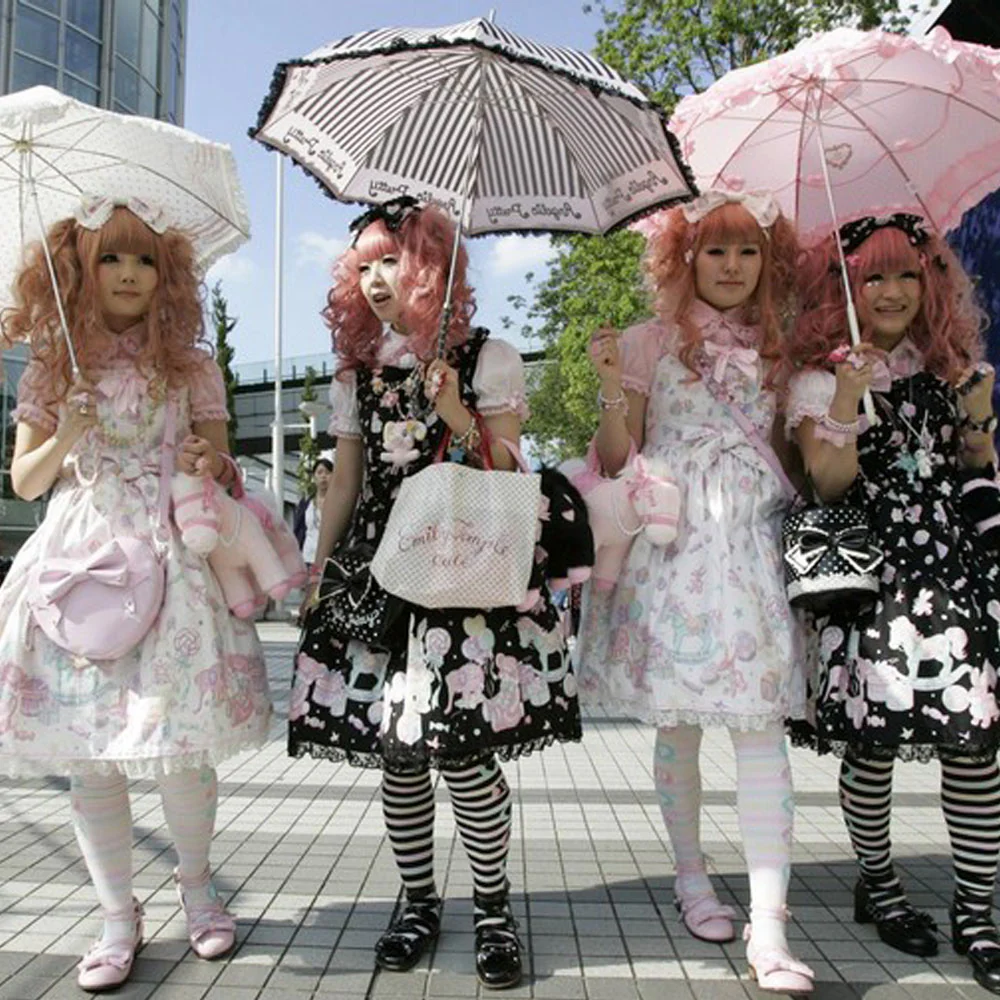
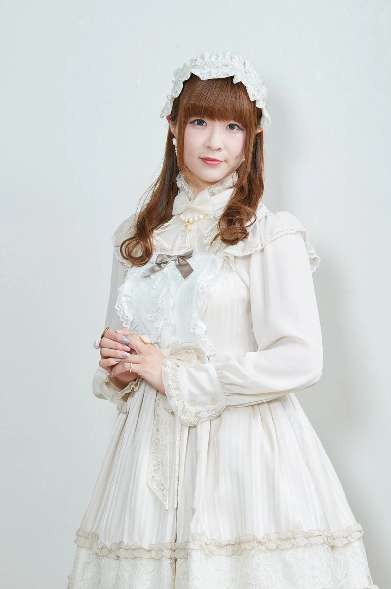
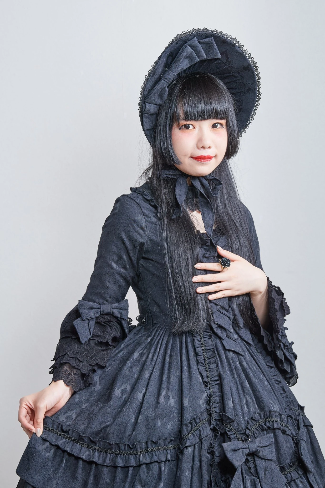
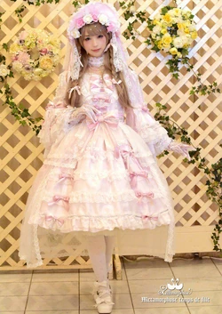
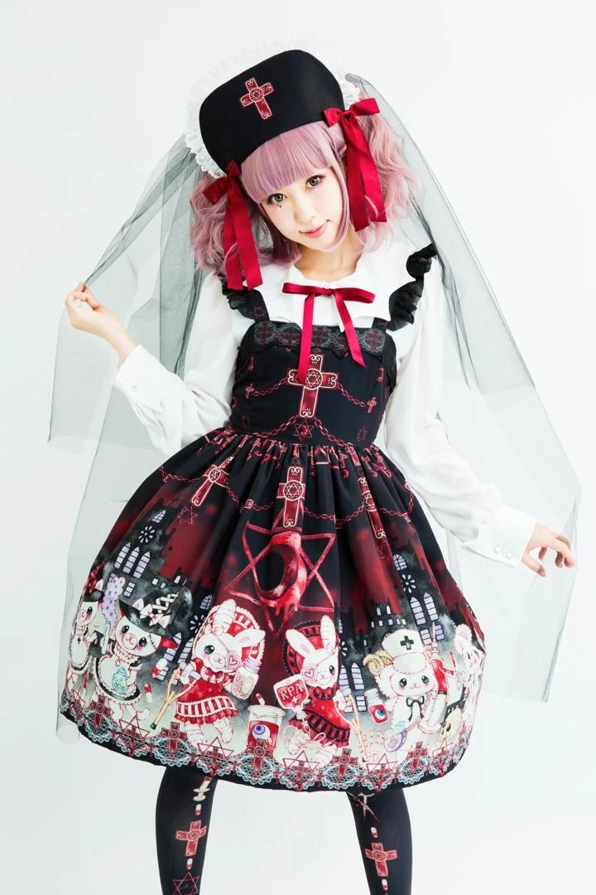
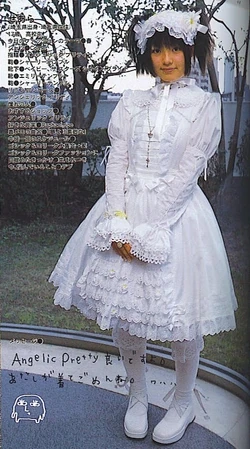
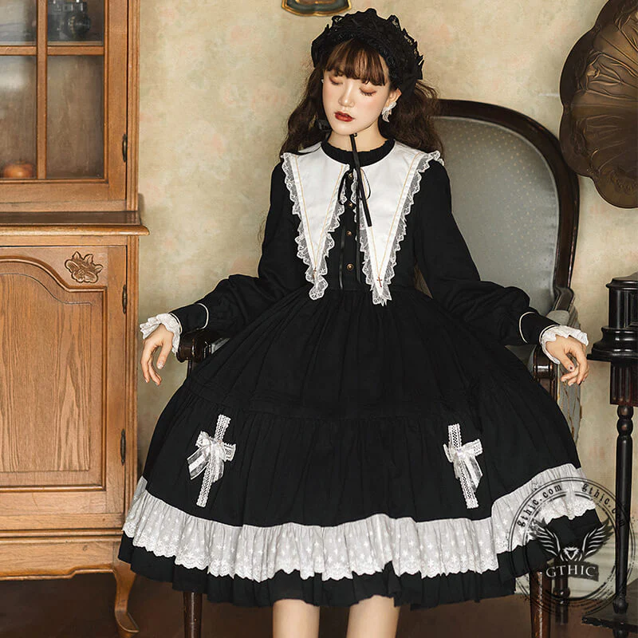

Lolita History
Lolita fashion to japońska subkultura modowa czerpiąca z wiktoriańskiej oraz rokowej elegancji. Narodziła się w latach 70. i 80. XX wieku. Promuje estetykę "lalki" opierającej się na charakterystycznej sylwetce.

Shiro
Shiro lolita (biała lolita) to minimalistyczny i monochromatyczny podstyl japońskiej mody lolita. Charakteryzuje się on stworzeniem stylizacji, która jest w 100% biała

Kuro
Kuro lolita (od jap. kuro - czarny) to podstyl lolity, który charakteryzuje się tym, że cały strój składa się wyłącznie z czarnych elementów

Hime Lolita
Hime lolita czyli "Lolita Księżniczka" to podstyl lolity czerpiąćy inspiracje z europejskiej mody królewskiej, łącząc je z elementami klasycznejj słodkiej lolity

Guro Lolita
Guro lolita (w skrócie Gurololi) to niszowy i szokujący podstyl mody Lolita, który łaczy tradycyjną, niewinną elegancję z motywami horroru, kiczu i groteski. Ma to na celu stworzenie efektu "uszkodzonej lalki"

Angelic Pretty
TUTAJ WPISZ SWÓJ OPIS

Gothic Lolita
TUTAJ WPISZ SWÓJ OPIS